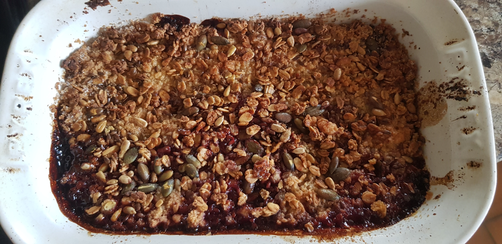
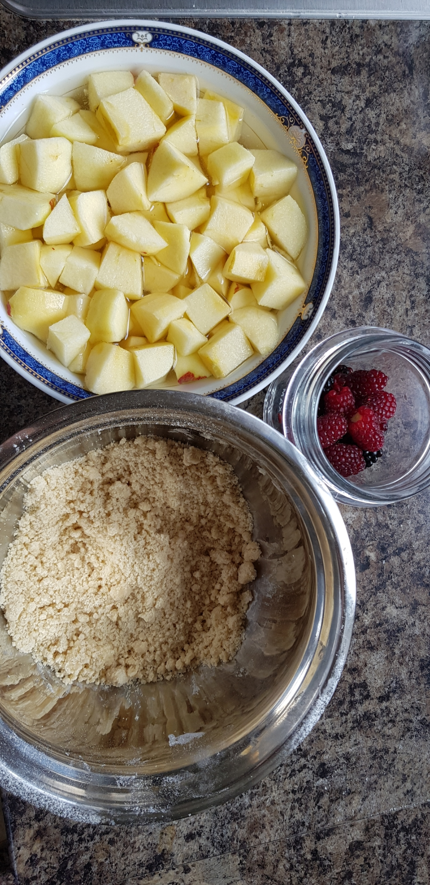

Apple and Tayberry Crumble


A tasty harvest treat. Pairs perfectly with cream or cornish clotted ice cream!
Ingredients:
For the crumble:
- 180g plain flour
- 90g caster sugar
- 90g melted unsalted butter
- A handful of granola and/or mixed seeds
- 1tbsp ground cinammon
For the fruit compote:
- 300g/approx. 5 apples, ideally braeburn
- 150g tayberries. I pick mine from my garden! If you can't find any tayberries, blackberries also work well.
- 30g unsalted butter
- 30g demarera sugar
- 1tsp ground cinammon
Instructions
- Preheat oven to 190c.
- Mix your flower (seived) and caster sugar in a bowl until combined.
- Add melted butter to mixture and mix with your hands in pinching motions until a crumble forms. Be careful not to overwork it! Stop when the crumble is at a density you like.
- Pour your crumble mix onto a baking sheet and put in the oven for 15 minutes or until lightly coloured. When finished, take out and leave to the side to cool.
- While that's cooking, peel your apples and cut them into approximately 2cm chunks, or whatever size is desired.
- Put your unsalted butter and demarera sugar into a saucepan and heat over low until the butter is melted and a light caramel forms- about 3 minutes.
- Add your apple pieces and heat for another 3 minutes, stirring frequently.
- Add your tayberries and cinammon and heat for another 3 minutes. Stir infrequently so the tayberries aren't turned to mush, but make sure everything is mixed.
- Take off the heat and pour into a large ceramic dish. Disperse your crumble mix evenly on top, and finish with granola and seeds, if desired.
- Reheat in the oven for 10 minutes, and serve immediately. Optionally pair with ice cream, cream, or custard.